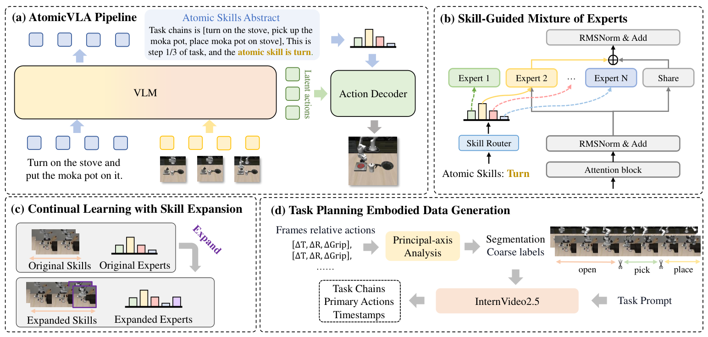

AtomicVLA
在 VLA 内部显式区分“思考”和“行动”，再按原子技能路由到动作专家。
AtomicVLA: Unlocking the Potential of Atomic Skill Learning in Robots
LIBERO-LONG：π₀ 85.2% → AtomicVLA 95.2%；π₀.₅ 92.4% → AtomicVLA* 96.2%。
01这篇要解决什么？
当所有动作混在一个解码器里，新技能学习可能干扰旧技能，长任务也难以显式跟踪进度。AtomicVLA 在模型内部加入任务链、当前进度和原子技能抽象，并以技能引导的混合专家组织动作生成。这里的技能是一组参数化专家。
02先看一个场景
取论文真机长程任务之一“把盘子放进微波炉并关门”。这条任务要连着做好几段性质不同的动作——靠近、抓起、送入、关门——其中关门不需要闭合夹爪，抓起却必须闭合。全部混在一个动作解码器里训练，这两件事会互相干扰，长任务也无从跟踪进度。
03方法怎样运转？

- 01
每一步先输出 [think] 或 [act]，由模型自己决定模态
推理循环的每一步，模型先根据多路相机观测与语言指令预测一个标识 token。预测到 [think] 就进入思考模式，以文本形式输出三样东西：整条任务链 C_{0-k}、当前执行进度 C_t、以及接下来要做的原子技能抽象 σ；论文说这种模式通常只在任务开始或子技能切换这类关键时刻触发。预测到 [act] 就进入行动模式，用最近一次 think 留下的 σ 加上当前本体感知状态 s_t 生成一段动作块 A_t。算法 1 的循环条件写的是“任务未完成”；执行中若出现异常（论文举的例子是黄油抓起后又掉落），模型会重新 think、改写进度并重发 σ，从而回到同一技能重做。
- 02
技能抽象先压成一个标量，再嵌成路由条件
每项原子技能抽象被映射到一个标量“噪声级” σ ∈ [0, 100]，再经 Z_σ = E(norm(log σ)) 嵌成高维向量。这个编码方式是借扩散去噪模型里噪声调度的做法，目的是让不同技能在嵌入空间里拉开距离。映射是确定性的，同一项技能永远得到同一个 Z_σ，所以路由不依赖模型每次对技能名称的重新理解。
- 03
SG-MoE：只看 Z_σ 做 top-1 路由，再与共享专家加权相加
路由器的输入只有 Z_σ，输出各专家分数 w_k = Router(Z_σ)，采用稀疏激活策略，只选得分最高的那一个技能专家。最终动作块是共享专家与被选专家的加权和：F_out = (1 − w_k)·F_share(x_t) + w_k·F_k(x_t)，其中 x_t 是 [多路观测, 指令, 本体状态]。共享专家承载基座 π₀ 原有的动作生成能力，技能专家各自按 Gemma 结构实现（前馈用独立的 SwiGLU MLP），训练开始时全部随机初始化。LIBERO 与真机实验用 5 个技能专家，CALVIN 因任务词表更广用 8 个。
- 04
技能标签怎么来：主轴分析切段，再让 InternVideo2.5 校正
原子技能的监督不是人工标注的。作者先对末端执行器轨迹做主轴分析：在连续五帧内比较平移量（Δx, Δy, Δz，阈值 3 厘米）、旋转量（Δroll, Δpitch, Δyaw，阈值 0.05 弧度）与夹爪变化（阈值 0.1）的主导分量——例如 z 坐标持续下降且夹爪闭合判为 pick，位移很小但旋转明显且夹爪保持闭合判为 turn。切出的片段再交给现成的视频理解模型 InternVideo2.5 看，自动校正与补全语义标签，最后与完整轨迹对齐成“已执行的原子动作序列 + 后续高层计划”的推理链。LIBERO 上由此得到 Pick / Place / Open / Close / Turn 五类，条数分别为 2462、761、201、152、175，少数类靠提高采样频率来平衡。
- 05
扩展新技能：只训新专家与新路由分支
遇到训练时没见过的技能，做法是给现有架构加一个对应专家并扩展路由网络，已有专家保持不变。扩展后的路由器直接复制原路由器权重，新增的路由分支用小随机值初始化，让模型以较少微调就适应变大的技能集。真机的持续学习实验就是这样做的：先在四个短任务上混合训练 20k 步，再以 5×10⁻⁶ 的学习率单独训练 7k 步来学“打开顶层抽屉”这项新技能。
Atomic = none
while 任务未完成: # 算法 1 的终止条件
M = vla.predict_token(O_t, ℓ) # 每步先决定输出模态
if M == [think]:
chain, progress, σ = vla.thinking(O_t, ℓ) # 任务链 / 进度 / 原子技能
Atomic = σ # 执行异常时也走这里，重发 σ 以恢复
elif M == [act]:
Z = E(norm(log(scalar(Atomic)))) # 技能→标量→确定性嵌入
w, k = Router(Z) # 只看 Z，top-1 稀疏激活
F = (1 - w) * F_share(x_t) + w * F_k(x_t) # x_t = [O_t, ℓ, s_t]
execute(F) # F_share 来自 π0 / π0.5 基座
t += 1
# 扩展：加一个 F_new 并扩展 Router 分支（复制旧权重 + 小随机初始化），旧专家不动方法与结果的原文定位见本页引用。
04跟着这个场景走一遍
教学推演：回到上面的场景。第一步，开局模型预测到 [think]，输出整条任务链（靠近盘子 → 抓起 → 送入微波炉 → 关门）、当前进度停在第一段、以及下一项原子技能 pick。第二步，pick 这个抽象被确定性地映射到一个固定标量，再嵌成向量 Z_σ；之后每次路由只看这个向量，不需要模型重新读懂“pick”这个词。第三步，路由器据 Z_σ 稀疏地选中 pick 专家，动作由共享专家（继承自 π₀.₅ 基座的通用动作能力）与 pick 专家按路由分数加权相加产生；接着模型连续吐出 [act]，直到抓取这一段走完，中间不再思考。第四步值得倒着看一遍：这段“pick”标签当初是怎么来的——训练时主轴分析发现 z 持续下降且夹爪闭合，把这一小段切出来标为 pick，再由 InternVideo2.5 核对。也就是说，专家的分工来自轨迹的运动学特征加一个现成视频模型的复核，不是人事先设计的技能表。第五步，若之后还要加“打开抽屉”，只需新增一个专家并复制扩展路由分支，其余专家不动。论文强调的收益也正在这里：混合训练时“开抽屉不需要闭合夹爪”这件事会污染其他抓取任务的夹爪行为，显式的专家边界把这种干扰隔开。这套机制没做到的是保证 σ 本身正确——路由完全听命于 think 给出的抽象，σ 一旦错了，路由会稳定地把所有相关 token 送进错误的专家，而这层错误在动作层面看不出来。论文附录也把这一点列为限制：技能路由的上限受 VLM 自身的推理与规划保真度约束。
05实验到底表现怎样？
v2 报告 LIBERO、CALVIN ABC→D 及真实 Franka 实验。AtomicVLA 基于 π₀，带 * 的 AtomicVLA* 基于 π₀.₅；这两组必须分别与自己的基座比较。
作者报告的实验结果 · v2
| 表 1–2 | LIBERO 平均 | LIBERO-LONG | CALVIN 平均完成长度 |
|---|---|---|---|
| π₀ | 94.2% | 85.2% | 3.87 |
| AtomicVLA | 96.6% | 95.2% | 4.09 |
| π₀.₅ | 96.9% | 92.4% | 4.02 |
| AtomicVLA* | 97.8% | 96.2% | 4.27 |
原始证据：方法：§3 ↗ · 仿真：表 1–2 ↗ · 实机、持续学习与消融：表 3–5 ↗
长任务改善幅度大于 LIBERO 总平均；同样不能把 * 版本与 π₀ 的差距全部当成技能结构的收益。真实长任务表 3 中，π₀.₅ 为 45.0%，AtomicVLA* 为 63.3%，相差 18.3 个百分点。
06收益来自哪里，又停在哪里？
消融与机制证据
表 5 的 LIBERO-LONG：π₀ 85.2%，普通 MoE 88.6%，MoDE 89.5%，技能引导 SG-MoE 95.2%。这比“加专家就会更好”的解释更细，但还需要考虑模型规模与推理成本。
结论的适用边界
模型来源是混合的：基座 π₀（AtomicVLA）与 π₀.₅（AtomicVLA*）是现成的通用机器人策略，共享专家直接继承它们的动作生成能力；技能专家则全部随机初始化、由作者训练（LIBERO 与 CALVIN 各 10 万步迭代，真机 3 万步，batch 64，8 张 H200）。标注侧接入的 InternVideo2.5 也是现成模型，只在数据生成阶段校正技能标签，不参与推理时的控制。因此这篇的前提成本是“一个可用的 VLA 基座加一次全量重训”，不是在基座上挂一个轻量模块；论文附录也承认新技能仍需相当量的人类示范做模仿学习。语义专家结构还依赖技能标签的质量、路由的准确性和训练覆盖，附录明确指出路由的上限受 VLM 产生准确原子技能抽象的能力约束。持续学习表 4 显示旧技能平均下降从 15.0 个百分点缩小到 1.3 个百分点，支持该设置下的抗遗忘，但不能据此宣称永不遗忘。
07放回全书的脉络
把 AtomicVLA、Voyager、ASPIRE 的技能载体并排写下来：参数专家、可执行函数、修复知识。它们的更新、迁移、验证方式都不同。
08把阅读变成一个小研究
若有训练算力，固定参数或计算预算比较普通 MoE 与语义路由；算力有限时，先分析技能路由错误会怎样传播到长任务。
先自己回答：这项实验怎样才有解释力？
最好同时报告路由准确率、单技能成功率、长链成功率和旧技能保留率。只测新增技能，无法回答持续学习是否真的有效。
- 用自己的话说出这篇改变了哪个模块。
- 画出它的输入、输出和一次失败如何被处理。
- 复述一个结果，同时说清基线、指标与实验条件。这一问不给答案，材料在第 05 节。
先自己答，再看前两问的参考答案
这篇改了哪个模块改动全部发生在一个 VLA 内部：动作生成不再由单个解码器包办，而是每一步先由模型自己吐出 [think] 或 [act] 决定这一步说话还是动手，再把 think 给出的原子技能抽象压成 Z_σ 当作路由条件，由 SG-MoE 把这一段交给某一个技能专家，共享专家则继承基座原有的动作生成能力。换个说法，被重新划分的是动作生成的内部分工边界，而不是这个策略对外的样子：观测与指令的入口没变，动作块这种输出形式没变，末端的动作空间与底层控制器都没动，模型外面也没有新挂规划器或验证器，任务链与进度都写在同一个模型自己的输出里。代价是它不是在基座上挂一个轻量模块，技能专家从随机初始化开始训，基座仍要重训一遍。
输入、输出与一次失败如何被处理模型直接看到的输入是多路相机观测 O_t、语言指令 ℓ 与本体感知状态 s_t；训练期那批原子技能标签由主轴分析切段、再由现成的 InternVideo2.5 校正，属于数据侧的外部供给，推理时并不在环。输出分两种形态：think 模式以文本给出整条任务链、当前执行进度与接下来要做的原子技能抽象 σ，act 模式用最近一次 think 留下的 σ 加上 s_t 产出一段动作块，直接下发给机器人，中间没有第二个执行者。一次失败由模型自己在 think 时重新判定：执行中出现异常（原文举的是黄油抓起后又掉落），模型重新 think、改写进度并重发同一个 σ，从而回到同一项技能重做。这里没有独立的验证者，异常与完成都由同一个模型凭观测判断；更要紧的是路由只看 Z_σ，σ 一旦错了，相关 token 会被稳定地送进错误的专家，而这层错误在动作层面看不出来，原文也把路由上限归到 VLM 产生准确原子技能抽象的能力上。
在 VLA 内部显式区分“思考”和“行动”，再按原子技能路由到动作专家。
↗带着位置回到原文
首发日期用于时间排序；以下方法与结果对应 v2。数据为论文作者报告，本讲义没有独立复现实验。
QA就这一页提问或讨论
对某个数字、某条边界或某个推演有疑问，欢迎直接留言：讨论按页面分开，回复会保留在 XinrunXu/awesome-agentic-robotics-papers 的 Discussions 里，需要一个 GitHub 账号。